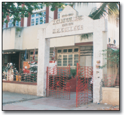

H.R. College of Commerce & Economics is one of the leading commerce and management colleges, affiliated to the prestigious University of Mumbai (Bombay). Today, there are over 6000 students and each year the institution grows from strength to strength.
The College has achieved excellent academic standards, while simultaneously creating opportunities for the all round development of students through sports and cultural activities by transferring the responsibility of the learning to the learner. The College empowers students and fosters young leaders.
H.R. College was the first college in Maharashtra to be accredited 'A' grade with a score of 87.95% by the NAAC (National Assessment & Accreditation Council) in 2002. In 2008, HR College was awarded an 'A' Grade by NAAC once again; with a CGPA of 3.46, which we proudly proclaim to be the highest in Maharashtra.
H.R. College also has the unique distinction of having received autonomy in 2007 from the University Grants Commission (UGC), making it the first college in the 150-year history of the University of Mumbai to have achieved this feat. The College will implement autonomy in due course.
The college strives for excellence in teaching and learning at undergraduate / postgraduate levels. In 1994, the college introduced the UGC's Scheme of Vocationalisation with Advertising, Sales Promotion & Sales Management, Tourism & Travel Management, Tax Procedure & Practice and Principles & Practices of Insurance.
The college was first to introduce an Honours' Programme whereby alongwith the undergraduate program a student can earn honours credits as well. The conventional Bachelor of Commerce continues to be the core of HR College's educational framework but the College has subsequently expanded to introduce other specialised courses in B.Com. The following degrees are offered by the college:
- Bachelor of Commerce (B.Com.)
- Bachelor of Management Studies (BMS)
- Bachelor of Commerce – Accounting and Finance (BAF)
- Bachelor of Commerce – Banking and Insurance (BBI)
- Bachelor of Commerce – Financial Markets (BFM)
- Bachelor in Mass Media (BMM)
- Masters of Commerce in Business Management
- Masters of Commerce in Accountancy
- PhD Program
Being at the hub of the business district, H.R. was the first college in Mumbai to initiate strong industry-academia relations. Industry experts are regularly invited to come and share their business strategies and experiences. This interaction helps the students to keep abreast with the latest developments in the business sector which in turn equips them for their professional lives. Each year the best names in the corporate sector offer H.R. students internships and placements.
Internationalisation has become the focal point of the teaching learning process at H.R. The college leads the way in student and faculty exchange programs. This exposure helps the faculty to understand the best practices of leading institutions and incorporate them in their teaching methods. The students are offered scholarships and exchange programs from institutions like NYU Stern , USA and King's College, UK, which helps them gain a global perspective.
The institution has a very active alumni association. Some of our illustrious alumni who have excelled in all walks of life are: Kumar Mangalam Birla, Prashant and Anshuman Ruia, Gautam Singhania, Karan Johar, Anil Kamath, Luis Miranda, Neil Nitin Mukesh, Sunil Shetty, Aftaab Shivdasani, and Raj Mirchandani. Dr. Indu Shahani is also a proud alumnus of H.R. College.
We look forward to H.R. becoming synonymous with 'High Rankers' and its students with 'Higher Responsibility'. H.R.'s motto is 'Prosperity through Commerce' and the institution will continue to produce young leaders of high integrity, in the process fostering truly global citizens.
With Dr. Indu Shahani as Principal and a dedicated faculty, the college looks forward to the growth of all its courses old and new.
Go Back